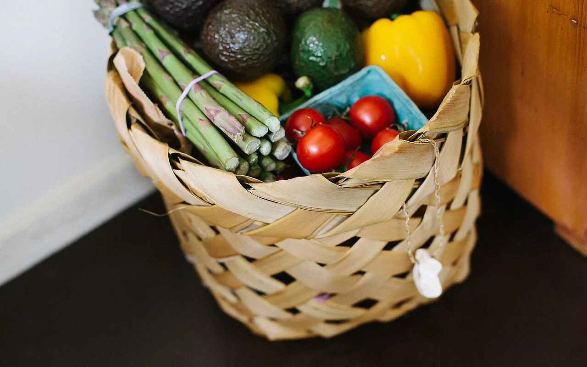
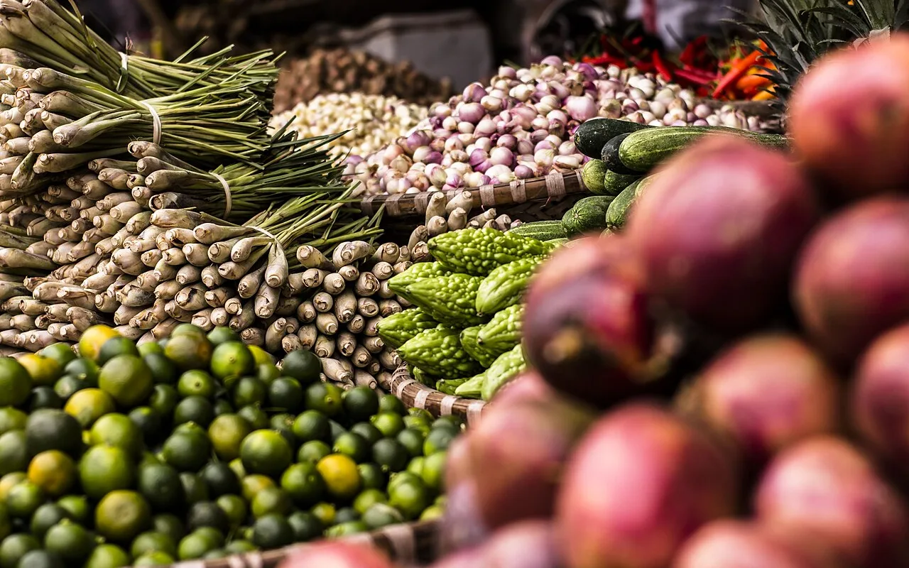
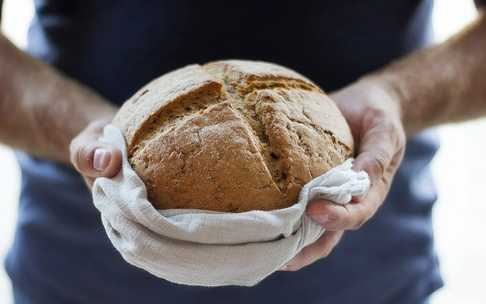
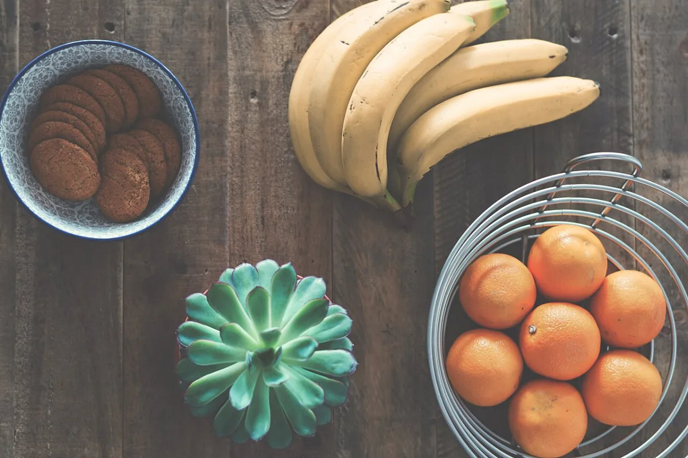
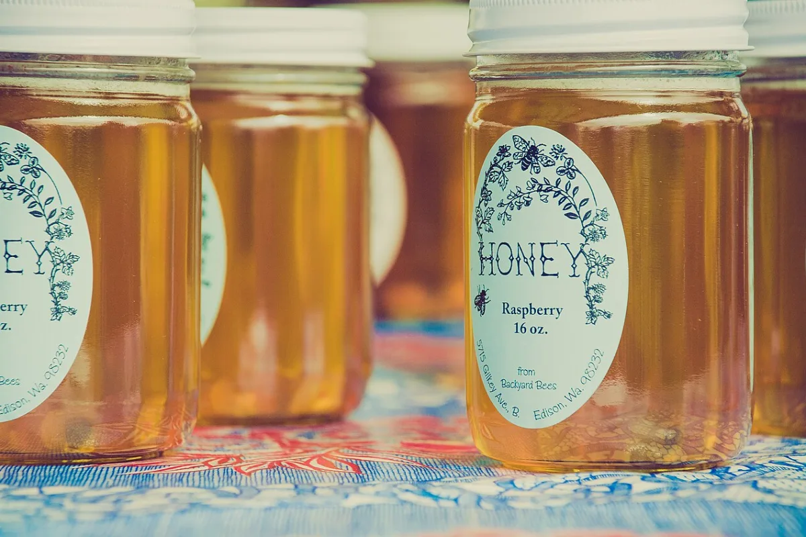
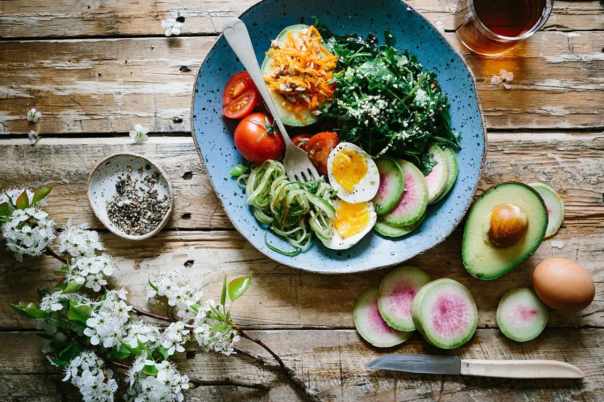
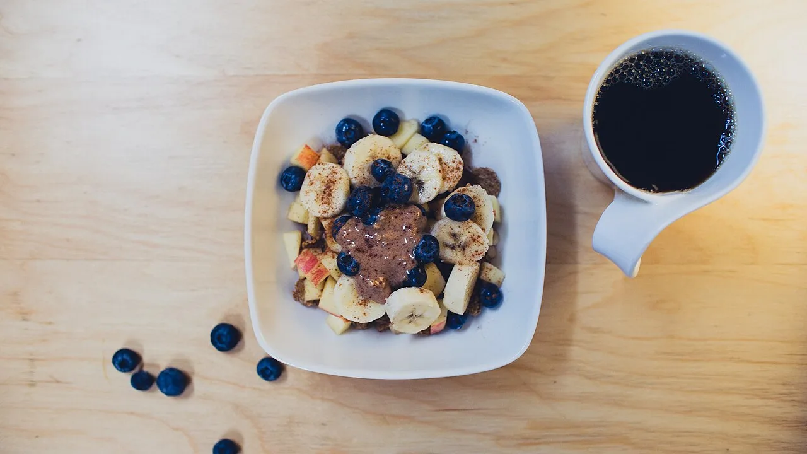
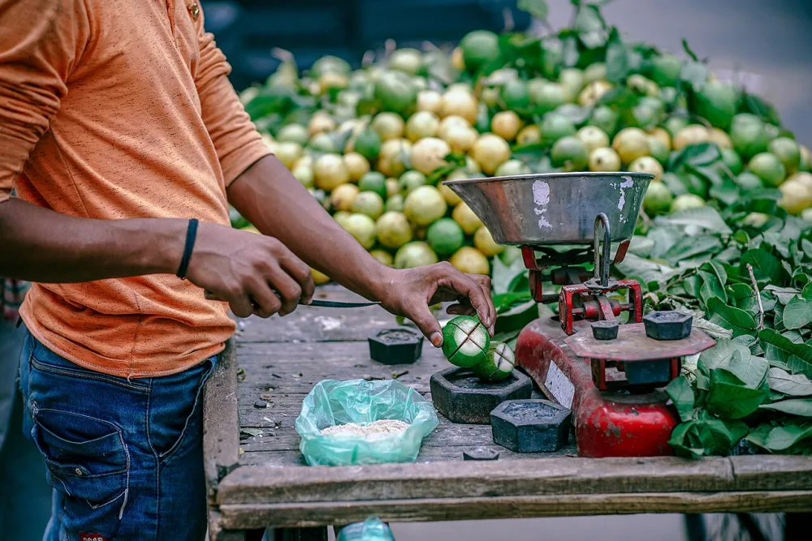
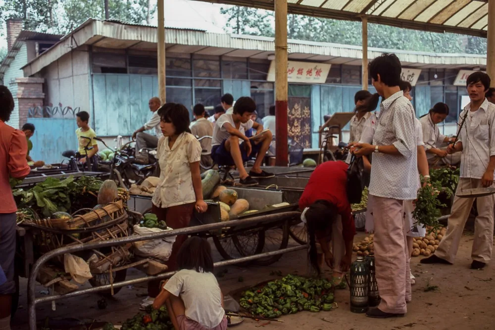
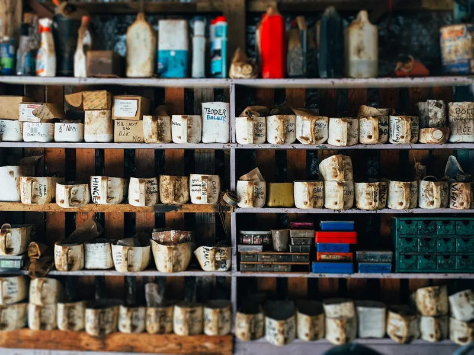

Nueve pasillos y más de mil ochocientos productos de demostración en un mismo sitio.
-

-

-

Compra por pasillos · recoge en tienda o recibe en casa
Todo lo que necesitas, más fresco y más cerca
Armamos la compra de la semana en minutos: la despensa, la fruta y lo de la lonchera en un mismo pedido, con los precios a la vista y sin colas.
Buscador con sugerencias, filtros por pasillo y una canasta que recuerda lo elegido.
Recojo en tienda o entrega a domicilio, con franjas horarias de ejemplo.
Cuenta con historial de pedidos y comprobantes guardados, listos para reclamar.
Compra por pasillo
Los mismos pasillos de la tienda de barrio, ordenados para que la compra de la semana no se te escape nada.
Lo que conviene esta semana
Tres selecciones de ejemplo. Ninguna promoción de esta demostración es real ni tiene fecha de vencimiento.

Frescos del día
Fruta y verdura que se ve recién cortada
Lo que entra cada mañana al mostrador, listo para la lonchera y la ensalada de la cena.
Ver frutas y verduras
Despensa de fondo
Productos esenciales para la semana
Abarrotes, conservas y café: lo que se termina justo cuando empieza la semana.
Ver abarrotes
Natural y saludable
Opciones frescas para comer mejor
Granos enteros, fruta de estación y lácteos para armar comidas simples en menos de media hora.
Ver opciones naturalesProductos populares
Precios de referencia con la presentación a la vista. Las existencias y los descuentos son ficticios.
Ofertas del día
Precio anterior tachado y precio actual, como en la pizarra de la tienda. Son ofertas de demostración: no hay promoción vigente.

Tu próxima compra empieza con algo bueno
Simula el beneficio de primera compra de la tienda: el código se aplica al confirmar el pedido en la versión real.
VERDIA10
Código de demostración · no otorga ningún descuento real.
Empezar la compraLo más vendido
Cambia de pasillo con las pestañas. La demostración no muestra ventas, valoraciones ni testimonios: serían datos inventados.
Compra por necesidad
Cuatro formas de llegar a lo mismo: una cena rápida, comer mejor, gastar menos o surtir la casa.
La compra del día empieza en el mostrador
Elegir la fruta una por una, cortar la carne al momento y hornear el pan temprano son cosas de barrio que una tienda en línea puede seguir haciendo. Esta plantilla está pensada para eso: mostrar el producto antes que el precio y explicar la variedad sin promesas que no se pueden cumplir.
Los textos, las fotos y los precios de esta demostración son de ejemplo. En la tienda real, aquí va la historia del negocio, sus productores y lo que quiere que se sepa de su mostrador.
- Filtros por pasillo para que el cliente llegue en dos toques a lo que busca.
- Ficha de producto con presentación, precio anterior y detalle de conservación.
- Canasta que sobrevive a la recarga y total que se puede revisar antes de confirmar.



Novedades y ofertas por correo
Cuéntale a tus clientes qué entra cada semana. En la demostración el formulario solo valida el formato: no se envía ni se almacena ningún correo.